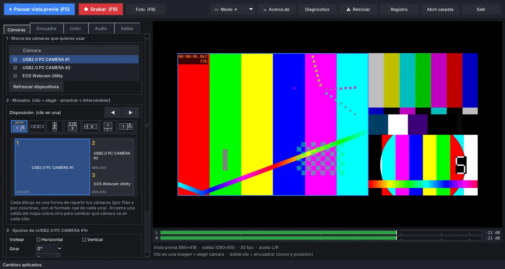
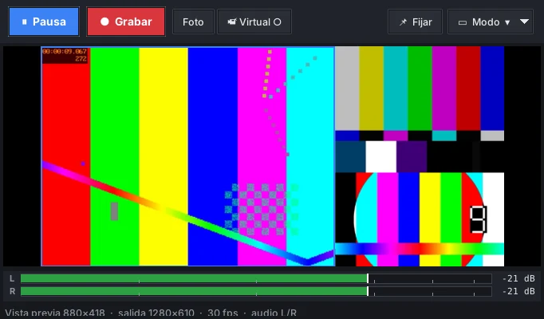
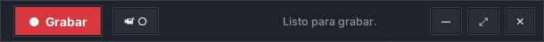

Todas tus cámaras en un solo vídeo.
cam-ui junta varias cámaras USB y dos micrófonos en un mosaico sincronizado. Lo grabas en MP4 o lo usas como cámara en tus videollamadas.
Esta demostración usa imágenes generadas, no cámaras reales. En el programa cada recuadro es una de tus cámaras y la disposición se adapta a su forma.
Pensado para cámaras USB baratas
Casi nunca se ponen de acuerdo en resolución, fps ni tiempos. cam-ui comprueba qué entrega cada una de verdad y mantiene imagen y sonido juntos.
- Sincronía
- Todas las cámaras y micrófonos comparten un mismo reloj, así que imagen y sonido no se desfasan aunque cada dispositivo arranque en un momento distinto. El botón «Sincronizar» convierte cualquier móvil en una claqueta: delante de cada cámara da un código que nunca se repite, como un código de barras en el tiempo, y cam-ui mide al milisegundo lo que tarda en llegar cada una y ajusta solo su retardo.
- Audio izquierdo y derecho
- Cada canal de salida sale del micrófono que elijas, de su lado izquierdo, derecho o mezcla, con ganancia propia. Vúmetros en vivo.
- Encuadre y color
- Voltea, gira, recorta y haz zoom por cámara. Ajusta brillo y color mientras grabas, sin parar. Cada cámara recuerda sus ajustes y su sitio en el mosaico, aunque pase meses sin conectarla.
- Modos de captura
- Lee qué tamaños y fps ofrece cada cámara y prueba cuáles aguanta de verdad. Si una cámara rechaza un modo, cam-ui prueba otro sola.
- Grabación segura
- Graba en MKV y lo pasa a MP4 al terminar, así un fallo no pierde el vídeo. La vista previa no se corta mientras grabas.
- Cámara virtualEn pruebas
- Ofrece el mosaico como una cámara en Teams, Zoom o Meet. Necesita tener OBS Studio instalado (gratis; no hace falta abrirlo). Solo vídeo, sin audio.
- Verlo en redEn pruebas
- Ve (y, si hay micrófono, oye) el mosaico en vivo desde otro PC o móvil de la misma wifi, con el navegador, con pantalla completa, sin instalar nada. Funciona a la vez que se graba y que la cámara virtual; solo para ver, sin contraseña.
- Botón de reinicio
- Si una cámara se queda retenida por un ffmpeg atascado, F12 los cierra todos y vuelve a empezar.
Tres tamaños de ventana



Instalar
Descarga el instalador
Un archivo pequeño, cam-ui-instalar.cmd. Puedes leerlo en el repositorio antes de ejecutarlo.
Ábrelo
Prepara su propio Python (no necesitas tener Python instalado) y descarga ffmpeg. La primera vez tarda un par de minutos.
Úsalo desde el menú Inicio
cam-ui se abre al terminar. Para actualizar, vuelve a ejecutar el instalador: tus ajustes se conservan.
A mano
Con Python 3.10 o superior y ffmpeg.exe junto a camui.py:
pip install numpy pillow pystray pyvirtualcam
python camui.py
Código y notas: github.com/enderHugin/cam-ui
¿Qué instala y dónde?
Todo va a tus propias carpetas de usuario (el programa en %LOCALAPPDATA%\Programs\cam-ui, su Python propio y ffmpeg en %LOCALAPPDATA%\cam-ui), con un acceso en el menú Inicio y en el escritorio, y aparece en «Aplicaciones instaladas». No toca el Python que ya tengas, ni pide permisos de administrador.
¿Cómo lo quito?
Desde Configuración de Windows → Aplicaciones → Aplicaciones instaladas, busca «cam-ui» — igual que para quitar cualquier otro programa. Pregunta si también quieres borrar tus capturas, grabaciones y ajustes, o conservarlos por si lo vuelves a instalar.
¿Por qué Windows me avisa al abrir el archivo?
El instalador es un script sin firmar por una empresa, y Windows avisa con cualquier script descargado. Si quieres comprobarlo antes, ábrelo con un editor de texto: es corto y solo descarga lo que se lista arriba.
¿Cuánto espacio necesita?
Alrededor de 500 MB libres en la unidad donde está tu carpeta de usuario (normalmente C:), entre Python, ffmpeg y las librerías; el instalador avisa si encuentra menos. Si esa unidad anda corta, puedes instalar en otra: abre una ventana de comandos, escribe set CAMUI_INSTALL_DIR=D:\cam-ui (con la unidad y carpeta que quieras) y ejecuta el instalador desde esa misma ventana.
¿La cámara virtual necesita algo más?
Sí: OBS Studio instalado (gratis, obsproject.com). cam-ui usa su cámara virtual, así que en tu app de videollamadas eliges «OBS Virtual Camera». Solo un programa puede usar esa cámara a la vez: no inicies además la cámara virtual dentro de OBS.
Mi cámara sale con poca calidad o no abre
En la pestaña Encuadre pulsa «Detectar» y luego «Probar modos». cam-ui mide lo que entrega cada modo y elige el mejor que funcione. Si sigue fallando, mándame el informe (mira la sección siguiente).
¿Qué es el «Motor nuevo»?
El de serie desde el pack 45 (se puede quitar en Ajustes → Avanzado). Cada cámara se abre por su lado y todas a la vez, y ninguna frena a las demás: una cámara lenta, una que se corta o la de otro PC solo va a saltos o pone «Sin señal» ella — el resto sigue fluido — y vuelve sola. Reiniciar el mosaico o empezar a grabar ya no vuelve a abrir las cámaras. Si encadenas otro PC con cam-ui y los dos llevan el motor nuevo, su cámara se alinea con las tuyas por la hora a la que se captó, aunque los relojes de los dos PCs no coincidan. Si algo va peor que con el motor de siempre (un solo ffmpeg para todas), desmárcalo.
¿Sigue funcionando con el PC bloqueado?
Sí. Bloquear (Win+L) no para los programas de escritorio, y mientras la vista previa está en marcha (y con ella la grabación, «En la red» y la cámara virtual) cam-ui le pide a Windows que no suspenda el equipo por inactividad; la pantalla sí se apaga como siempre. Lo que Windows no deja evitar a ningún programa: suspenderlo a propósito (cerrar la tapa, el botón de encendido, Inicio → Suspender — lo de la tapa se cambia en las opciones de energía de Windows) y, en portátiles a batería con «Modern Standby», que la suspensión llegue igualmente unos minutos después. Enchufado, aguanta lo que haga falta.
¿Puedo usar el móvil como una de las cámaras?
Sí, de dos formas. La más sencilla, sin instalar nada: el servidor de la cámara del móvil está siempre activo (no hay que encenderlo) — en la pestaña Ajustes, en «Cámara del móvil», abre cualquiera de las direcciones fijas que muestra, todas terminadas en /movil (sin número de puerto si el 443 del PC está libre, p. ej. https://192.168.1.129/movil), en el propio navegador del móvil. Esa página solo pide permiso de cámara para leer un código QR — por sí sola no añade nada. En cuanto concedes el permiso, aparece un QR de un solo uso en la propia pantalla del PC — en una ventana flotante, al instante, estés en la pestaña que estés — léelo con esa misma cámara del móvil (sin salir de la página «/add») y el móvil navega solo hasta la página de captura — la cámara aparece sola en la lista, ya marcada y lista para grabar. Como hay que estar mirando la pantalla del PC para ver ese QR, nadie más de la wifi puede añadir una cámara sin que lo veas ocurrir. Si ya tienes abierta en el móvil la página de «verlo en red», ahí hay también un botón «Añadir cámara del móvil» que lleva directo a esa misma dirección «/add», sin tener que acordarte de otro puerto. La primera vez, el navegador avisará de que la conexión "no es privada": es el certificado propio de cam-ui (necesario para que el navegador deje usar la cámara), no un fallo — «Avanzado → Continuar» una vez y ya lo recuerda; en iPhone o iPad hace falta, además, un paso extra de una sola vez (botón «Instalar certificado» en esa misma pestaña, con su propio QR — abre esa página en Safari: Chrome y los demás navegadores de iPhone/iPad solo lo descargan como un archivo), porque sin él Safari no deja usar la cámara ahí en absoluto — en Android no hace falta nada de esto. Por ahora solo vídeo, sin audio. El móvil queda recordado en cuanto se empareja, así que no vuelve a pedir el QR ni aunque se reinicie cam-ui — en Ajustes, «Administrar dispositivos móviles» muestra cuáles son («iPad», «iPhone» o «Android · modelo», con su última conexión) y deja renombrarlos u olvidar cualquiera. La forma de siempre también sigue funcionando: instala una app que transmita vídeo (como «IP Webcam»), pon el móvil en la misma wifi y en cam-ui pulsa «Añadir cámara de red…» con la dirección que da la app (algo como http://192.168.1.50:8080/video, o una dirección rtsp://) — útil si prefieres mantener los ajustes propios de esa app, o ya la tienes configurada. De cualquier forma, puedes hacer doble clic sobre la cámara en la lista para editar su nombre sin perder su encuadre ni su color, y si se desconecta cam-ui no para todo el mosaico: pone «Sin señal: <nombre>» en su sitio, sigue grabando el resto, y reconecta sola cuando vuelva. Ese mismo cuadro de «Añadir cámara de red…» también vale la dirección de «verlo en red» de otro PC con cam-ui, para encadenar varios equipos — llega con la misma forma y los mismos fps que el mosaico de ese PC (con su encuadre, sin barras negras añadidas, hasta 30 fps); su «Tamaño» de «En la red» es solo el máximo, así que para más resolución basta con elegir uno mayor allí.
¿Puedo verlo desde otro PC o móvil?
Sí: en el menú «Modo» (o el botón de la barra, la pestaña Ajustes, o el icono de la bandeja) activa «En la red» y abre la dirección que te muestra (algo como http://192.168.1.50:8554/) en el navegador de otro aparato de la misma wifi — hacer clic en esa dirección en la barra de estado la abre en tu propio navegador predeterminado, para comprobarlo rápido. La página tiene un botón de pantalla completa y, si hay un micrófono configurado, un botón «Activar sonido» (los navegadores no dejan arrancarlo solo) con su propio control de silencio y volumen. Es solo para ver — cualquiera en tu wifi puede abrir esa dirección mientras esté activa, no tiene contraseña — y sigue funcionando mientras grabas y mientras la cámara virtual está encendida. La primera vez, Windows puede preguntar si deja pasar a cam-ui por el Firewall: permítelo, o ningún aparato podrá conectarse.
¿Puedo enviarlo a un Chromecast o AirPlay?
A un Chromecast, sí, de dos formas. Desde el equipo donde corre cam-ui: con «En la red» activada, pulsa «Abrir en VLC» (pestaña Ajustes, menú «Modo», o icono de la bandeja) — si VLC está instalado, abre ahí el vídeo en vez del navegador, y desde el propio menú de VLC Reproducción → Renderizador se puede elegir un Chromecast de la misma wifi; VLC hace la conversión él solo, sin nada más que configurar en cam-ui. Si VLC no está instalado, ofrece abrir su página de descarga. Desde quien lo esté viendo por el navegador: la propia página del visor tiene un botón de Chromecast — en Chrome o Edge con internet, es el icono nativo de verdad (el de YouTube): un toque, eliges la tele, y ya está; cam-ui enciende para eso un segundo ffmpeg aparte (H.264 por HLS, en directo, solo mientras se está viendo de verdad en la tele — la vista normal del navegador sigue usando el mismo stream de siempre, sin ningún cambio). Sin ese icono (sin internet, u otro navegador), cae en un botón que explica cómo usar el «Convertir en Chromecast» del propio navegador — de una forma u otra, siempre hay algo que funciona. AirPlay no tiene equivalente en Windows: ningún reproductor lo trae integrado como VLC trae Chromecast (el vídeo por AirPlay es sobre todo una función de macOS), así que por ahora no está soportado.
¿Se actualiza sola?
Sí. cam-ui comprueba si hay una versión más nueva al abrirse y, si la hay, pregunta antes de instalarla (puedes desactivarlo y comprobar a mano con el botón «🔄 Actualizaciones» o el icono de la bandeja). También hay una casilla opcional «actualizar automáticamente al abrir, sin preguntar», para quien prefiera que ni se le pregunte. En cualquier caso guarda una copia de la versión que tenías y el programa puede volver a ella con un clic; tu configuración nunca se toca.
Cuéntame cómo te va
Vale la pena escribir aunque todo haya ido bien: me dice qué cámaras y montajes cuidar.
Dar mi opinión
Para qué lo usas, qué cámaras tienes, qué te ha gustado y qué te ha costado.
Algo no funciona
Una cámara no abre, el vídeo sale mal, el programa se cierra.
Pedir una función
Cuéntame qué intentas conseguir y veo cómo hacerlo posible.
Hace falta una cuenta gratuita de GitHub. Para avisar de un problema, adjunta el archivo camui.log (junto a camui.py; el botón «Registro» lo abre) y, si es de resolución o fps, el informe de «Probar modos». También puedes leer lo que han enviado otras personas.
Apoya cam-ui
cam-ui es gratis y no tiene anuncios. Si te ahorra tiempo, invítame a un café y ayúdame a seguir mejorándolo.